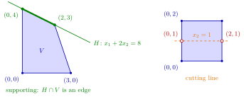

Extreme Points on a Supporting Hyperplane¶
Proposition¶
Let be a nonempty convex set and let , with , be a supporting hyperplane of such that . Then:
- (a) is convex;
- (b) the extreme points of are exactly the extreme points of that lie on :
Moreover, if is a nonempty closed convex set with an extreme point , then for every supporting hyperplane of through the set has an extreme point.
Interpretation¶
When a hyperplane touches a convex set from one side, the part of the set on the hyperplane is again convex, and its corners are precisely the corners of the whole set that lie on the hyperplane. Extreme points can therefore be found in these smaller pieces.

On the left, supports the quadrilateral of Example 1: all of satisfies , and is the green edge from to , whose two end points are exactly the extreme points of on . On the right, the line cuts through the square of Example 4: is the segment from to , and its end points (open red circles) are extreme in that segment but not in the square, since is the midpoint of and .
Part (a) is the intersection of two convex sets. Half of (b) holds for any subset: a point that is not the middle of a segment in is not the middle of a segment in the smaller set . The other half needs that lies on one side of , say on . If equals with and , then is an average of two numbers that are at most , so both equal and lie in . For a hyperplane cutting through the argument breaks down, and can have extreme points that are not extreme in (Example 4).
The assumption is there because a supporting hyperplane only has to meet the closure of : for the open disc and the tangent line the intersection is empty. The final statement, about closed sets with an extreme point, follows from (b) as it is stated, since the extreme point itself lies in .
This step drives the induction in the proof that a compact convex set is the convex hull of its extreme points. In OR Modelling, when a linear program has multiple optimal solutions, the optimal edge is for the objective line through the optimum, and its end points are corner points of the feasible region.
Key Results¶
- For a supporting hyperplane of a nonempty convex with , the set is convex, as an intersection of two convex sets.
- Under the same assumptions .
- The inclusion holds for every hyperplane ; the reverse inclusion uses that lies on one side of .
- If a nonempty closed convex has an extreme point , then has an extreme point for every supporting hyperplane through .
- Combined with supporting hyperplanes through boundary points, this reduces the proof of for compact convex to dimension .
Examples¶
1. An edge of a quadrilateral. Let , with , found by intersecting the boundary lines in pairs. The line is a supporting hyperplane: on , with equality at and . Here is the segment from to , whose extreme points are its two end points, and these are exactly the extreme points of on .
2. Several supporting lines through one extreme point. Let , a closed set with , and . Three supporting lines through are , and (on , ). Their intersections with are the ray , the segment from to , and the single point , with profiles , and . Each contains , as the final statement of the proposition says, and each profile is .
3. A supporting line that misses the set. For the open disc , the line is a supporting hyperplane: on , and lies on . Yet , so there is no face to look at; this is why the proposition assumes .
4. A line that cuts through. For the square and the line , which is not a supporting hyperplane, is the segment from to with extreme points and . But is not an extreme point of , and . Without the supporting property, (b) fails.
Prerequisites¶
Related Concepts¶
- Convex Hull of Extreme Points
- Extreme Points of a Polyhedral Set
- Set of Minimizers of a Quasi-Convex Function
- Separation of a Point and a Closed Convex Set
- Multiple Optimal Solutions
Sources¶
- Math VI: Convexity and Optimization · Week 3
- H. E. Nusse and M. Dienstknecht, Math VI: Convexity and Optimization, lecture notes 2026–2027, Section 3.1
Aliases: profile of a face, extreme points of H ∩ V, Ext(H ∩ V) Keywords: \operatorname{Ext}(H\cap V)=H\cap\operatorname{Ext}(V), \boldsymbol{a}^{\top}\boldsymbol{x}\leq b, supporting hyperplane through an extreme point, face of a convex set Symbols: element of, intersection, lambda, real numbers, subset
Last updated: 5 November 2026 12:47
Extreme Points on a Supporting HyperplaneOptima at Extreme PointsExtreme PointSupporting HyperplaneIntersection and Sum of Convex SetsConvex Hull of Extreme PointsExtreme Points of a Polyhedral SetSet of Minimizers of a Quasi-Convex FunctionSeparation of a Point and a Closed Convex SetMultiple Optimal Solutions